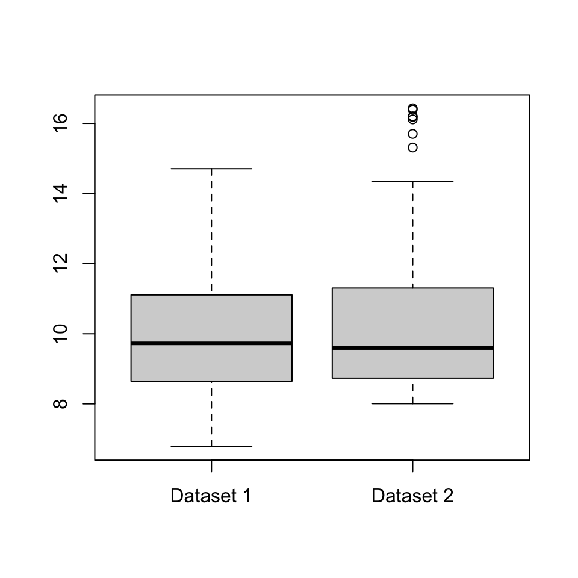

Solutions
This page has the solutions to all the non-assessed questions on Problem Sheet 1 to 5. Solutions are added after tutorials on the Problem Sheet have finished.
Solutions to assessed questions are available on Minerva in the “Assessments” tab, from one week after the deadline.
There are many ways you get feedback on this module, both group feedback (feedback that is generally relevant to many people) and individual feedback (feedback based specifically on your own approach to the work).
- You will have received both individual and group spoken feedback in your tutorial (the more you speak up in your tutorial, the more individualised the feedback you get in return).
- These solutions include group written feedback on common issues for the class.
- Most importantly, when your work on assessed questions is marked, individual written feedback will be given via the Gradescope site. It is very important that you read that feedback.
- Finally, students who would like even more feedback can discuss their work with me in the “office hours” drop-in sessions.
Problem Sheet 1
A1. Consider again the “number of Skittles in each packet” data from Example 1.1. \[ 59, \ 59, \ 59, \ 59, \ 60, \ 60, \ 60, \ 61, \ 62, \ 62, \ 62, \ 63, \ 63 .\]
(a) Calculate the mean number of Skittles in each packet.
Solution. This was in the notes: \[ \bar x = \frac{1}{13} (59 + 59 + \cdots + 63) = \frac{789}{13} = 60.7 .\]
(b) Calculate the sample variance using the computational formula.
Solution. \[\begin{align*} s_x^2 &= \frac{1}{13 - 1} \left( (59^2 + 59^2 + \cdots + 63^2) - 13 \times 60.6923^2)\right) \\ &= \frac{1}{12} (47915 - 47886.2) \\ &= 2.40 \end{align*}\]
Group feedback: With the computational formula, the value \(\sum_i x_i^2 - n \bar{x}^2\) is typically a fairly small number given as the difference between two very big numbers \(\sum_i x_i^2\) and \(n \bar x^2\). This means you have to get the two big numbers very precise, to ensure the cancellation happens correctly; in particular, make sure you use plenty of decimal places of accuracy in \(\bar x\).
(c) Calculate the sample variance using the definitional formula.
Solution. \[\begin{align*} s_x^2 &= \frac{1}{13 - 1} \left( (59 - 60.7)^2 + (59 - 60.7)^2 + \cdots + (63 - 60.7)^2 \right) \\ &= \frac{1}{12} (2.86 + 2.86 + \cdots + 5.33) \\ &= \frac{1}{12} \times 28.77 \\ &= 2.40 \end{align*}\]
(d) Out of (b) and (c), which calculation did you find easier, and why?
Solution. The computational formula required fewer presses of the calculator buttons, because \(\sum_i x_i^2\) is fewer button-presses than \(\sum_i (x_i - \bar x)^2\), where you have to subtract the means before squaring.
On the other hand, the expression inside the brackets of the computational formula is a fairly small number given as the difference of two very large numbers, so it was necessary to use lots of decimal places of accuracy in \(\bar x\) to make sure the second large number was accurate and therefore that the subtraction cancelled correctly.
Group feedback: Many answer for (d) are fine provided you give a justification.
A2. Consider the following data sets of the age of elected politicians on a local council. (The “18–30” bin, for example, means from one’s 18th birthday to the moment before one’s 30th birthday, so lasts 12 years.)
| Age (years) | Frequency | Relative frequency | Frequency density |
|---|---|---|---|
| 18–30 | 1 | ||
| 30–40 | 3 | ||
| 40–45 | 4 | ||
| 45–50 | 5 | ||
| 50–55 | 3 | ||
| 55–60 | 1 | ||
| 60–70 | 3 | ||
| Total | 20 | 1 | — |
(a) Complete the table by filling in the relative frequency and frequency densities.
Solution.
| Age (years) | Frequency | Relative frequency | Frequency density |
|---|---|---|---|
| 18–30 | 1 | 0.05 | 0.0041 |
| 30–40 | 3 | 0.15 | 0.015 |
| 40–45 | 4 | 0.2 | 0.04 |
| 45–50 | 5 | 0.25 | 0.05 |
| 50–55 | 3 | 0.15 | 0.03 |
| 55–60 | 1 | 0.05 | 0.01 |
| 60–70 | 3 | 0.15 | 0.015 |
| Total | 20 | 1 | — |
(b) What is the median age bin?
Solution. The 10th- and 11th-largest observations are both in the 45–50 bin, which is therefore the median bin.
(c) What is the modal age bin?
Solution. The bin with the largest frequency density is 45–50, which is therefore the modal bin.
(d) Calculate (the standard approximation of) the mean age of the politicians.
Solution. Pretending that each person is in the centre of their bin, we have \[ \bar x = \frac{1}{20} (1\times24 + 3\times 35 + \cdots + 3 \times 65) = \frac{946.5}{20} = 47.3 . \]
A3. Consider the two datasets illustrated by the boxplots below. Write down some differences between the two datasets.

Solution. Some answers could be:
- The median and inter-quartile range of Dataset 2 appear to be very slightly larger than those in Dataset 1, although the differences are very small and might not be important in real life.
- Dataset 2 has a few outliers; Dataset 1 has none.
- While Dataset 1 is fairly “balanced” either side of the median, Dataset 2 shows what statisticians call a “positive skew”: the data above the median is much more spread out than the data below the median.
Group feedback: You can probably think of other answers.
B1. For each of the two datasets below, calculate the following summary statistics, or explain why it is not possible to do so: mode; median; mean; number of distinct outcomes; inter-quartile range; and sample variance.
(a) Six packets of Skittles are opened together, and the total number of sweets of each colour is:
| Colour | Red | Orange | Yellow | Green | Purple |
|---|---|---|---|---|---|
| Number of Skittles | 67 | 71 | 87 | 74 | 62 |
Solution. The modal colour is Yellow. The number of distinct outcomes is 5.
It’s not possible to calculate the median or the quartiles, because, unlike numerical data, the colours can’t be put “in order” from smallest to largest.
It’s not possible to calculate the mean or sample variance, as these require us to have numerical data that can be “added up”, but this can’t be done with colours.
(b) Shirt sizes for a university football squad:
| Colour | Xtra Small | Small | Medium | Large | Xtra Large |
|---|---|---|---|---|---|
| Number of shirts | 0 | 1 | 6 | 4 | 5 |
Solution. The modal shirt size is medium. The number of distinct outcomes is 4 (we don’t quite “Xtra Small”, which was not observed in the data).
This time, we can order the data from smallest to largest, even though the data is not numerical. Since \((16 + 1)/2 - 8.5\), the median datapoint is the 8th or 9th datapoints, which are Large.
Since \(1 + 0.25(16 - 1) = 4.75\) the lower quartile is the 4th or 5th datapoints, which are Medium. Since \(1 + 0.75(16-1) = 12.25\), the upper quartile is the 12th or 13th datapoints, which are Xtra Large. So we can certainly say that the inner quartiles range from Medium to Xtra Large. We could probably also say that the interquartile range is 3 shirt sizes (Medium, Large, Xtra Large).
Again, because the data is not numerical, we can’t add it up, so can’t calculate a mean or sample variance.
Group feedback: Make sure your explanation is clear for why we can’t calculate a median for the Skittles data but can for the shirts: they key is whether or not the data can be ordered.
B2. A summary statistic is informally said to be “robust” if it typically doesn’t change much if a small number of outliers are introduced to a large dataset, or “sensitive” if it often changes a lot when a small number of outliers are introduced. Briefly discuss the robustness or sensitivity of the following summary statistics: (a) mode; (b) median; (c) mean; (d) number of distinct outcomes; (e) inter-quartile range; and (f) sample variance.
Solutions.
(a) The mode will typically not change at all if a small number of outliers are introduced, so is robust. (The exception is for data where every observation is likely to be different, so the outliers become “joint modes” along with everything else; but in this case the mode is not a useful statistic in the first place.)
(b) The introduction of outliers will typically only change the median a little bit, by shifting it between different nearby values in the “central mass” of the data. In particular, the size of the outliers won’t make any difference at all (only whether they are “high outliers” above the median or “low outliers” below the median). So the median is robust.
(c) The mean can change a lot if outliers are introduced, especially if the outlier is enormously far our from the data. So the mean is sensitive.
(d) The number of distinct outcomes will only increase by (at most) 1 for each outlier introduced, so is robust.
(e) The interquartile range is robust, for the same reason as the median.
(f) The sample variance is sensitive, for the same reason as the mean.
(You might like to think about situations where it’s better to use a robust statistic or better to use a sensitive statistic.)
Group feedback: I find it helpful to suppose I was studying the net worth of people in my tutorial group, and calculating summary statistics. How would those statistics changed change if Elon Musk (founder of Tesla, net worth roughly $200 billion) joined my tutorial group?
Remember that “robust” and “sensitive” are general descriptions rather than precise mathematical definitions. So it doesn’t matter if you disagree with my opinions provided that you give clear and detailed explanations to back up your opinion.
B3. Let \(\mathbf a = (a_1, a_2, \dots a_n)\) and \(\mathbf b = (b_1, b_2, \dots, b_n)\) be two real-valued vectors of the same length. Then the Cauchy–Schwarz inequality says that \[ \left( \sum_{i=1}^n a_i b_i \right)^2 \leq \left( \sum_{i=1}^n a_i^2 \right) \left(\sum_{i=1}^n b_i^2 \right) . \]
(a) By making a clever choice of \((a_i)\) and \((b_i)\) in the Cauchy–Schwarz inequality, show that \(s_{xy}^2 \leq s_x^2 s_y^2\).
Solutions. Recalling the formulas for \(s_{xy}\), \(s_x^2\), and \(s_y^2\), \[\begin{align*} s_{xy} &= \frac{1}{n-1} \sum_{i=1}^n (x_i - \bar x)(y_i - \bar y) ,\\ s_{x}^2 &= \frac{1}{n-1} \sum_{i=1}^n (x_i - \bar x)^2 ,\\ s_{y}^2 &= \frac{1}{n-1} \sum_{i=1}^n (y_i - \bar y)^2 , \end{align*}\] and comparing them with the Cauchy–Schwarz inequality, it looks like taking \(a_i = x_i - \bar x\) and \(b_i = y_i - \bar y\) might be useful. Making the substitution, we get \[ \left( \sum_{i=1}^n (x_i - \bar x)(y_i - \bar y) \right)^2 \leq \left( \sum_{i=1}^n (x_i - \bar x)^2 \right) \left(\sum_{i=1}^n (y_i - \bar y)^2 \right) . \]
These are very close to the formulas for \(s_{xy}\), \(s_x^2\), and \(s_y^2\), but are just missing the “\(1/(n-1)\)”s; what we in fact have is \[ \left( (n-1) s_{xy} \right)^2 \leq (n-1)s_x^2 \cdot (n-1) s_y^2 .\] Cancelling \((n-1)^2\) from each side, we have \(s_{xy}^2 \leq s_x^2 s_y^2\).
(b) Hence, show that the correlation \(r_{xy}\) satisfies \(-1 \leq r_{xy} \leq 1\).
Solutions. Recall the formula for the correlation is \[ r_{xy} = \frac{s_{xy}}{s_xs_y} . \] We can make part (a) look a bit like this dividing both sides by \(s_x^2 s_y^2\), to get \[\frac{s_{xy}^2}{s_x^2 s_y^2} \leq 1. \] In fact that’s the square of the correlation on the left-hand side, so we’ve shown that \(r_{xy}^2 \leq 1\).
Finally, we note that if a number squared is less than or equal to 1, then the number must be between -1 and +1 inclusive. (Numbers bigger than 1 get bigger still when squared; number smalles than -1 become bigger than +1 when squared.) Hence we have shown that \(-1 \leq r_{xy} \leq 1\), as required.
Group feedback: In part (b) there’s a temptation to “square-root both sides of the inequality”. But you have to be very careful when you do this – make sure you are properly accounting for the positive and negative square roots on both side (if necessary), and where that does or doesn’t require reversing the inequality. I recommend leaving the square-root operation until the last possible moment of the proof or, perhaps even better, reasoning through words as I did above.
Remember that you can still attempt part (b) even if you got stuck on part (a).
B4. A researcher wishes to study the effect of mental health on academic achievement. The researcher will collect data on the mental health of a cohort of students by asking them to fill in a questionnaire, and will measure academic achievement via the students’ scores on their university exams. Discuss some of the ethical issues associated with the collection, storage, and analysis of this data, and with the publication of the results of the analysis. Are there ways to mitigate these issues?
(It’s not necessary to write an essay for this question – a few short bulletpoints will suffice. There may be an opportunity to discuss these issues in more detail in your tutorial.)
Group feedback: There are no “correct” or “incorrect” answers here, but here are a few things that students in my own tutorials brought up, which may act as a prompt for your own discussions.
- It’s important the students/subjects have given their consent for their data to be used this way. It must be “informed consent”, where they understand for what purpose the data will be used, how it will be stored, and so on. It must be easy and painless for students to decline to take part.
- Consideration should be given on how to anonymise the data as much as possible – it’s not necessary for those analysing the data to know which questionnaire or which exam result belongs to which student, only that the questionnaire and results can be paired up.
- Even if after data is anonymised, care should be taken about whether the students could be worked out from the data. For example, if only one student did a certain combination of modules, their identity could “leak” that way. Perhaps imprecise data, such as classes rather than exact marks, might help while only slightly reducing the usefulness of the data?
- On one hand, it seems like this data should perhaps be deleted once analysis has been carried out, for the privacy of the students. On the other hand, principles of “open science” suggest that the data should be kept – and even publically made available – for other researchers to check the work. There are competing ethical considerations here.
- If correlations are found in the data, care should be taken when publishing the analysis not to wrongly suggest a causation. (Just because X and Y are positively correlated, it doesn’t mean that X causes Y – or that Y causes X.)
You can probably think of many other things.
Problem Sheet 2
A1. Suppose you toss a coin 4 times.
(a) What would you suggest for a sample space \(\Omega\) (i) if you only care about the total number of heads; (ii) if you care about the result of each coin toss?
(b) For each of the cases in part (a), what is \(|\Omega|\)?
Solution.
(i) We can take \(\Omega = \{0,1,2,3,4\}\), with \(|\Omega| = 5\).
(ii) Here, \(\Omega = \{ \text{HHHH}, \text{HHHT}, \text{HHTH},\dots, \text{TTTT} \}\) should be the set of all sequences of four “H”s or “T”s. So here, \(|\Omega| = 2^4 = 16\).
A2. Let \(A\), \(B\) and \(C\) be events in a sample space \(\Omega\). Write the following events using only \(A\), \(B\), \(C\) and the complement, intersection, and union operations.
(a) \(C\) happens but \(A\) doesn’t.
Solution. This is “\(C\) and not \(A\)”: \(C\cap A^{\mathsf{c}}\).
(b) At least one of \(A\), \(B\) and \(C\) happens.
Solution. This is simply the union \(A \cup B\cup C\).
(c) Exactly one of \(B\) or \(C\) happens.
Solution. One way to write this is to split it up as “‘\(B\) but not \(C\)’ or ‘\(C\) but not \(B\)’”, which is \((B \cap C^{\mathsf{c}}) \cup (B^{\mathsf{c}} \cap C)\).
An alternative is to split it up as “‘\(B\) or \(C\)’ but not ‘both \(B\) and \(C\)’”, which is \((B \cup C) \cap (B\cap C)^{\mathsf{c}}\).
You can check these are equal by (for example) using De Morgan’s law and the distributive law to expand out the second version.
(d) Exactly two of \(A\), \(B\) and \(C\) happens.
Solution. I would split this up into “\(A\) and \(B\) but not \(C\)”, “\(A\) and \(C\) but not \(B\)”, and “\(B\) and \(C\) but not \(A\)” and take the union. This gives \[ (A \cap B \cap C^{\mathsf{c}}) \cup (A \cap B^{\mathsf{c}} \cap C) \cup (A^{\mathsf{c}} \cap B \cap C) . \] There are other equivalent formulations.
A3. What is the value of the following expressions?
(a) \(6!\)
Solution. \[ 6! = 6 \times 5 \times 4 \times 3 \times 2 \times 1 = 720. \]
(b) \(8^4\)
Solution. \[ 8^4 = 8 \times 8 \times 8 \times 8 = 4096 \]
(c) \({8}^{\underline{4}}\)
Solution. \[ {8}^{\underline{4}} = 8 \times 7 \times 6 \times 5 = 1680 \]
(d) \({\displaystyle \binom{10}{4}}\)
Solution. \[ \binom{10}{4} = \frac{10 \times 9 \times 8 \times 7}{4\times 3\times 2\times 1} = 210 \]
A4. An urn contains 4 red balls and 6 blue balls. Two balls are drawn from the urn. What is the probability that both balls are red, if the balls are drawn (a) with replacement; (b) without replacement?
Solution.
(a) There are \(|\Omega| = 10^2 = 100\) ways to draw two balls with replacement. There are \(|A| = 4^2=16\) ways to draw two blue balls. So \(\mathbb P(A) = \frac{16}{100} = 0.16\).
(b) There are \(|\Omega| = {10}^{\underline{2}} = 10 \times 9 = 90\) ways to draw two balls without replacement. There are \(|A| = {4}^{\underline{2}} = 4 \times 3 = 12\) to draw two blue balls. So \(\mathbb P(A) = \frac{12}{90} = \frac{2}{15} = 0.133\).
B1. Starting from just the three probability axioms, prove the following statements:
(a) \(\mathbb P(\varnothing) = 0\).
Solution. Let \(A\) be any event (such as \(A = \varnothing\) or \(A = \Omega\), for example). Then \(A \cup \varnothing = A\), and the union is disjoint – since \(\varnothing\) contains no sample points, it certainly can’t contain any sample points that are also in \(A\). Then applying Axiom 3, we get \(\mathbb P(A) + \mathbb P(\varnothing) = \mathbb P(A)\). Subtracting \(\mathbb P(A)\) from both sides gives the result.
Alternatively, if you prove part (b) first, you can apply that with \(A = \varnothing\). Since \(\varnothing^\mathsf{c}= \Omega\) and Axiom 2 tells us that \(\mathbb P(\Omega) = 1\), the result follows.
Group feedback: With this, and most “prove from the axioms” questions, the key is to find a relevant disjoint union, which then allows us to use Axiom 3. So if we can find \(C = A \cup B\) as a disjoint union (hopefully containing some events relevant to the question at hand), Axiom 3 allows us to write \(\mathbb P(C) = \mathbb P(A) + \mathbb P(B)\).
(b) \(\mathbb P(A^\mathsf{c}) = 1 - \mathbb P(A)\).
Solution. A very useful and relevant disjoint union is \(A \cup A^\mathsf{c}= \Omega\). Applying Axiom 3 gives us \(\mathbb P(A) + \mathbb P(A^\mathsf{c}) = \mathbb P(\Omega)\). But Axiom 2 tells us that \(\mathbb P(\Omega) = 1\), so \(\mathbb P(A) + \mathbb P(A^\mathsf{c}) = 1\). Rearranging gives the result.
B2. In this question, you will have to use the standard two-event form of the addition rule for unions \[ \mathbb P(A \cup B) = \mathbb P(A) + \mathbb P(B) - \mathbb P(A \cap B) . \]
(a) Using the two-event addition rule, show that \[ \mathbb P(C \cup D \cup E) = \mathbb P(C) + \mathbb P(D \cup E) - \mathbb P\big(C \cap (D \cup E)\big). \]
Solution. As with the Cauchy–Schwarz question from Problem Sheet 1, the key is to make a good choice for what \(A\) and \(B\) should be. This time, \(A = C\) and \(B = D \cup E\) will work well, since \(C \cup (D \cup E) = C \cup D \cup E\). (You can call this “associativity”, if you like.) Making that substitution immediately gives us \[ \mathbb P(C \cup D \cup E) = \mathbb P(C) + \mathbb P(D \cup E) - \mathbb P\big(C \cap (D \cup E)\big) , \] as required.
(b) Using your result from part (a), the two-event addition rule, the distributive law, and the two-event addition rule again, prove the three-event form of the addition rule for unions: \[ \mathbb P(C \cup D \cup E) = \mathbb P(C) + \mathbb P(D) + \mathbb P(E) - \mathbb P(C \cap D) - \mathbb P(C \cap E) - \mathbb P(D \cap E) + \mathbb P(C \cap D \cap E) . \]
Solution. Let’s take the three terms on the right of the equation from part (a) separately.
The first term is \(\mathbb P(C)\), which is fine as it is.
The second term is \(\mathbb P(D \cup E)\). This is the probability of the union of two events, so we can use addition rule for the union of two events to get \[ \mathbb P(D \cup E) = \mathbb P(D) + \mathbb P(E) - \mathbb P(D \cap E) . \]
The third term is \(\mathbb P\big(C \cap (D \cup E)\big)\). If we use the distributive law, as suggested in the question, we get \(C \cap (D \cup E) = (C \cap D) \cup (C\cap E)\), so we want to find \(\mathbb P\big((C \cap D) \cup (C\cap E)\big)\). But this is another union of two events again, this time with \(A = C \cap D\) and \(B = C \cap E\). So the two-event addition rule gives \[ \mathbb P\big((C \cap D) \cup (C\cap E)\big) = \mathbb P(C \cap D) + \mathbb P(C \cap E) - \mathbb P(C \cap D \cap E) , \] since \((C \cap D) \cap (C \cap E) = C \cap D \cap E\).
Finally, we put this all together, and get \[\begin{align*} \mathbb P(C &\cup D \cup E) \\ &= \mathbb P(C) + \big(\mathbb P(D) + \mathbb P(E) - \mathbb P(D \cap E)\big) - \big(\mathbb P(C \cap D) + \mathbb P(C \cap E) - \mathbb P(C \cap D \cap E)\big) \\ &= \mathbb P(C) + \mathbb P(D) + \mathbb P(E) - \mathbb P(C \cap D) - \mathbb P(C \cap E) - \mathbb P(D \cap E) + \mathbb P(C \cap D \cap E) , \end{align*}\] which is what we wanted.
B3. Suppose we pick a number at random from the set \(\{1, 2, \dots, 2022\}\).
(a) What is the probability that the number is divisible by 5?
Solution. The sample space is \(\Omega = \{1, 2, \dots, 2022\}\). Clearly \(|\Omega| = 2022\). Further, the event in question is \(A = \{5, 10, \dots, 2020\}\) of numbers up to 2022 that are divisible by 5. Thus \(|A|\) is the largest integer no bigger than \(\frac{2022}{5} = 404.4\), which is 404, as this is how many times 5 “goes into” 2022. Hence \[ \mathbb P(A) = \frac{|A|}{|\Omega|} = \frac{404}{2022} = 0.1998 , \] just a tiny bit smaller than \(\frac{1}{5}\).
Group feedback: With these “classical probability” questions, the steps should always be:
- State clearly what the sample space \(\Omega\) is.
- Count how many outcomes \(|\Omega|\) are in the sample space.
- State clearly what the event \(A\) is.
- Count how many outcomes \(|A|\) are in the event.
- The desired probability is then \(\mathbb P(A) = |A|/|\Omega|\).
(b) What is the probability the number is divisible by 5 or by 7?
Solution. With the same \(\Omega\) and \(A\), now let \(B\) be the numbers up to 2022 divisible by \(7\); so we’re looking for \(\mathbb P(A \cup B)\). By the addition rule for unions, this is \[ \mathbb P(A \cup B) = \mathbb P(A) + \mathbb P(B) - \mathbb P(A \cap B) . \] We already know \(\mathbb P(A) = \frac{404}{2022}\), so need to find out \(\mathbb P(B)\) and \(\mathbb P(A \cap B)\).
As before, \(|B|\) is the largest integer no bigger that \(\frac{2022}{7} = 288.9\), which is \(288\). So So \(\mathbb P(B) = \frac{288}{2022}\). Now, \(A \cap B\) is the numbers divisible by both 5 and 7, which is precisely the numbers divisible by \(5 \times 7 = 35\). Then \(|A \cap B|\) is \(\frac{2022}{35} = 57.8\) rounded down, so \(\mathbb P(A \cap B) = \frac{57}{2022}\).
So finally, we have \[ \mathbb P(A \cup B) = \frac{404}{2022} + \frac{288}{2022} - \frac{57}{2022} = \frac{635}{2022} = 0.314. \]
B4. Eight friends are about to sit down at random at a round table. Find the probability that
(a) Ashley and Brook sit next to each other, with Chris directly opposite Brook;
Solution. Let \(\Omega\) be the sample space of ways the friends can sit around the table. This is an ordering problem, so \(|\Omega| = 8!\).
Let \(A\) be the event in the question. What is \(|A|\)? Well,
- Ashley can sit anywhere, so has 8 choices of seat.
- Brook can sit either directly to Ashley’s left or directly to Ashley’s right, so has 2 choices of seat.
- Chris must sit directly opposite Brook, so only has 1 choice of seat.
- The remaining five friends can fill up the remaining seats however they like, so have 5, 4, 3, 2, and 1 choices respectively.
Hence \(|A| = 8 \times 2 \times 1 \times 5 \times 4 \times 3 \times 2 \times 1\). Thus we get \[ \mathbb P(A) = \frac{|A|}{|\Omega|} = \frac{8 \times 2 \times 1 \times 5 \times 4 \times 3 \times 2 \times 1}{8 \times 7 \times 6 \times 5 \times 4 \times 3 \times 2 \times 1} = \frac{2 \times 1}{7 \times 6} = \frac{1}{21} . \]
Group feedback: As we have discussed recently, often “classical probability” problems can be solved by the step-by-step “chain rule” method. Can you use a chain rule argument to find the same answer as \[ \mathbb P(A) = 1 \times \frac27 \times \frac16 \times 1 \times 1 \times 1 \times 1 \times 1 = \frac{1}{21} ? \]
(b) neither Ashley, Brook nor Chris sit next to each other.
Solution. The sample space \(\Omega\) is as before. Let’s count the outcomes in \(B\), the event in the question.
- Ashley can sit anywhere, so has 8 choices of seat.
- Chris’s number of choices will depend on where Brook sits, so we’ll have to count Brook’s and Chris’s choices together:
- Brook cannot sit next to Ashley.
- If Brook sits next-but-one to Ashley – of which there are 2 choices – then Chris has 3 choices: Chris cannot sit on the seat directly between Ashley and Brook, nor directly next to Ashley on the other side, nor directly next to Brook on the other side, leaving \(6-3=3\) choices.
- If Brook sits neither next nor next-but-one to Ashley – of which there are 3 choices – then Chris has 2 choices: he cannot sit to the right or left of Ashley, nor to the right or left of Brook, leaving \(6-4=2\) choices.
- The remaining friends have 5, 4, 3, 2, and 1 choices again.
Hence, \(|B| = 8 \times (2\times 3 + 3 \times 2) \times 5 \times 4 \times 3 \times 2 \times 1\). So \[ \mathbb P(B) = \frac{|B|}{|\Omega|} = \frac{8 \times (2\times 3 + 3 \times 2) \times 5 \times 4 \times 3 \times 2 \times 1}{8 \times 7 \times 6 \times 5 \times 4 \times 3 \times 2 \times 1} = \frac{2\times 3 + 3 \times 2}{7 \times 6} = \frac{12}{42} = \frac{2}{7} . \]
Alternatively, in a previous tutorial, a MATH1710 student suggested to me the following rather elegant solution. Suppose the five other friends are already sat at a round table with five chairs. Ashley, then Brook, then Chris will each bring along their own chair, and push into one of the gaps between the friends.
Ashley has 5 gaps to choose from, then Brook will have 6 gaps (Ashley joining the table will have increased the number of gaps by 1), then Chris will have 7, so the total number of ways they can push in is \(|\Omega| = 5 \times 6 \times 7\).
To not sit next to each other, Ashley can push in any of the 5 gaps, Brook only has \(6 - 2 = 4\) choices (not in the gap directly to the left or right of Ashley), and Chris only has \(7 - 4 = 3\) choices (not in the gaps directly to the left or right of Ashley nor the gaps directly to the left or right of Brook – these four gaps are distinct assuming Brook was not next to Ashley). Hence \(|B| = 5 \times 4 \times 3\), and we have \[ \mathbb P(B) = \frac{5 \times 4 \times 3}{5 \times 6 \times 7} = \frac{4 \times 3}{6 \times 7} = \frac{12}{42} = \frac{2}{7}. \]
B5. A “random digit” is a number chosen at random from \(\{0, 1, \dots, 9\}\), each with equal probability. A statistician chooses \(n\) random digits (with replacement).
(a) For \(k = 0, 1, \dots, 9\), let \(A_k\) be the event that all the digits are \(k\) or smaller. What is the probability of \(A_k\), as a function of \(k\) and \(n\)?
Solution. The sample space is \(\Omega = \{0,1,\dots,9\}^n\), the set of length-\(n\) sequences of digits between \(0\) and \(9\). The number of these is \(|\Omega| = 10^n\), as there are 10 choices for each of the \(n\) digits.
The event \(A_k\) is \(\{0,1,\dots,k\}^n\), the set of length-\(n\) sequences of digits that are between \(0\) and \(k\). The number of these is \(|A_k| = (k+1)^n\). (Note that it’s \(k+1\) because we’re allowing 0 as well.)
Hence, the probability is \[ \mathbb P(A_k) = \frac{|A_k|}{|\Omega|} = \frac{(k+1)^n}{10^n} . \]
(b) Let \(B_k\) be the event that the largest digit chosen is equal to \(k\). By finding a relationship between \(B_k\), \(A_{k-1}\) and \(A_k\), or otherwise, show that \[ \mathbb P(B_k) = \frac{(k+1)^n - k^n}{10^n} . \]
Solution. Consider the event \(A_k\) that all the digits are at most \(k\). Within \(A_k\), either one or more of the digits is \(k\), in which case that is the largest digit we are in \(B_k\); or none of the digits are \(k\), in which case they are all at most \(k-1\), and we are in \(A_{k-1}\), but not both. Hence we have a disjoint union \[ A_k = B_k \cup A_{k-1} . \] Applying Axiom 3 gives \[ \mathbb P(A_k) = \mathbb P(B_k) + \mathbb P(A_{k-1}) . \] Rearranging this gives \[ \mathbb P(B_k) = \mathbb P(A_k) - \mathbb P(A_{k-1}) . \] Substituting in the answer from part (a) gives \[\mathbb P(B_k) = \frac{(k+1)^n}{10^n} - \frac{(k-1+1)^n}{10^n} = \frac{(k+1)^n - k^n}{10^n} . \]
Problem Sheet 3
A1. Consider dealing two cards (without replacement) from a pack of cards. Which of the following pairs of events are independent?
(a) “The first card is a Heart” and “The first card is Red”.
Solution. We have \[\begin{align*} \mathbb P(\text{first Heart}) &= \frac{13}{52} = \frac14 \\ \mathbb P(\text{first Red}) &= \frac{26}{52} = \frac12 \\ \mathbb P(\text{first Heart and first Red}) &= \mathbb P(\text{first Heart}) = \frac14 . \end{align*}\] So \(\mathbb P(\text{first Heart and first Red}) \neq \mathbb P(\text{first Heart})\,\mathbb P(\text{first Red})\), and the events are not independent.
(b) “The first card is a Heart” and “The first card is a Spade”.
Solution. We have \[\begin{align*} \mathbb P(\text{first Heart}) &= \frac{13}{52} = \frac14 \\ \mathbb P(\text{first Spade}) &= \frac{13}{52} = \frac14 \\ \mathbb P(\text{first Heart and first Spade}) &= 0 . \end{align*}\] So \(\mathbb P(\text{first Heart and first Spade}) \neq \mathbb P(\text{first Heart})\,\mathbb P(\text{first Spade})\), and the events are not independent.
(c) “The first card is a Heart” and “The first card is an Ace”.
Solution. We have \[\begin{align*} \mathbb P(\text{first Heart}) &= \frac{13}{52} = \frac14 \\ \mathbb P(\text{first Ace}) &= \frac{4}{52} = \frac1{13} \\ \mathbb P(\text{first Heart and first Ace}) &= \mathbb P(\text{first Ace of Hearts}) = \frac1{52} . \end{align*}\] So \(\mathbb P(\text{first Heart and first Ace}) = \mathbb P(\text{first Heart})\,\mathbb P(\text{first Ace})\), and the events are independent.
(d) “The first card is a Heart” and “The second card is a Heart”.
Solution. We have \[\begin{align*} \mathbb P(\text{first Heart}) &= \frac{13}{52} = \frac14 \\ \mathbb P(\text{second Heart}) &= \frac{13}{52} = \frac14 \\ \mathbb P(\text{first Heart and second Heart}) &= \frac{13\times 12}{52 \times 51} = \frac{1}{17} \end{align*}\] So \(\mathbb P(\text{first Heart and second Heart}) \neq \mathbb P(\text{first Heart})\,\mathbb P(\text{second Heart})\), and the events are not independent.
(e) “The first card is a Heart” and “The second card is an Ace”.
Solution. We have \[\begin{align*} \mathbb P(\text{first Heart}) &= \frac{13}{52} = \frac14 \\ \mathbb P(\text{second Ace}) &= \frac{4}{52} = \frac1{13} \\ \mathbb P(\text{first Heart and second Ace}) &= \frac{12\times4 + 1\times 3}{52\times 51} = \frac{51}{52\times 51} = \frac{1}{52} \end{align*}\] Here, the \(12 \times 4\) counted “a non-Ace Heart, followed by an Ace”, while the \(1 \times 3\) counted “the Ace of Hearts, followed by a non-Heart Ace”. So \(\mathbb P(\text{first Heart and second Ace}) = \mathbb P(\text{first Heart})\,\mathbb P(\text{second Ace})\), and the events are independent.
A2. Consider rolling two dice. Let \(A\) be the event that the first roll is even, let \(B\) be the event that the second roll is even, and let \(C\) be the event that the total score is even. You may assume the dice rolls are independent; so, in particular, events \(A\) and \(B\) are independent.
(a) Are \(A\) and \(C\) independent?
Solution. Let us first note that \(\mathbb P(A) = \mathbb P(B) = \frac36 = \frac12\). It’s also the case that \(\mathbb P(C) = \frac{18}{36} = \frac12\), for example by counting the 18 even outcomes out of the 36 equally likely possibilities.
We need to test is \(\mathbb P(A \cap C) = \mathbb P(A) \, \mathbb P(C) = \frac14\) or not. By counting from the 36 possibilities, we see that indeed \(\mathbb P(A \cap C) = \frac{9}{36} = \frac{1}{4}\). Alternatively, we could note that \(\mathbb P(C \mid A) = \mathbb P(B) = \frac12\), since if the first dice is even, the second must be also even to get an even total. Then \(\mathbb P(A \cap C) = \mathbb P(A) \, \mathbb P(C \mid A) = \frac14\).
So the events are independent.
(b) Are \(B\) and \(C\) independent?
Solution. Yes. The solution is essentially identical to part (a).
(c) Is it true that \(\mathbb P(A \cap B \cap C) = \mathbb P(A) \, \mathbb P(B) \, \mathbb P(C)\)?
Solution. By checking the 36 possibilities, one sees that \[ \mathbb P(A \cap B \cap C) = \frac{9}{36} = \frac{1}{4} \neq \frac{1}{8} = \frac12 \times \frac12 \times \frac12 = \mathbb P(A)\, \mathbb P(B) \, \mathbb P(C) . \]
Alternatively, note that the total being even is certain if both dice rolls are certain, so \[ \mathbb P(A \cap B \cap C) = \mathbb P(A \cap B) \, \mathbb P(C \mid A \cap B) = \frac14 \times 1 = \frac14 , \] to get the same result.
Group feedback: This shows that just because events are “pairwise independent”, it does not mean they are “mutually independent”.
A3. Consider the random variable \(X\) with the following PMF:
| \(x\) | \(-1\) | \(0\) | \(0.5\) | \(1\) | \(2\) |
|---|---|---|---|---|---|
| \(p(x)\) | \(0.1\) | \(0.3\) | \(0.3\) | \(0.2\) | \(0.1\) |
Find the expectation and variance of \(X\).
Solution. For the expectation, \[ \mathbb EX = -1\times0.1 + 0\times0.3 + 0.5\times0.3+1\times0.2+2\times0.1 = 0.45. \]
For the variance, we start with \[ \mathbb EX^2 = (-1)^2\times0.1 + 0^2\times0.3 + 0.5^2\times0.3+1^2\times0.2+2^2\times0.1 = 0.775 . \] Then, using the computational formula, \[ \operatorname{Var}(X) = \mathbb EX^2 - \mu^2 = 0.775 - 0.45^2 = 0.5725. \]
A4. Consider the random variable \(X\) with the following PMF:
| \(x\) | \(1\) | \(2\) | \(4\) | \(5\) | \(a\) |
|---|---|---|---|---|---|
| \(p(x)\) | \(0.1\) | \(0.2\) | \(0.1\) | \(b\) | \(0.1\) |
This random variable has \(\mathbb EX = 4.3\). Find the values of \(a\) and \(b\).
Solution. First, a PMF must sum to 1, so \[ 1 = 0.1 + 0.2 + 0.1 + b + 0.1 , \] so \(b = 0.5\).
Second, the expectation is \[ \mathbb EX = 1\times0.1 + 2 \times 0.2 + 4 \times 0.1 + 5b + 0.1a = 3.6 + 0.1a = 4.3 . \] So \(a = 7\).
A5. A temperature \(T_C\) measured in degrees Celsius can be converted to a temperature \(T_F\) in degrees Fahrenheit using the formula \(T_F = \frac95 T_C + 32\).
The average daily maximum temperature in Leeds in July is 19.0 °C. The variance of the daily maximum temperature measured in degrees Celsius is 10.4.
(a) What is the average daily maximum temperature in degrees Fahrenheit?
Solution. By linearity of expectation, \[ \mathbb E T_F = \mathbb E\left(\tfrac95T_C + 32\right) = \tfrac95 \mathbb ET_C + 32 . \] So the answer is \(\frac95 \times 19.0 + 32 = 66.2\) °F.
(b) What is the variance of the daily maximum temperature when measured in degrees Fahrenheit?
Solution. For the variance, \[ \operatorname{Var}(T_F) = \operatorname{Var}\left(\tfrac95T_C + 32\right) = \left(\tfrac95\right)^2 \operatorname{Var}(T_C) = \tfrac{81}{25}\operatorname{Var}(T_C). \] So the answer is \(\frac{81}{25} \times 10.4 = 33.7\).
B1. Suppose \(A\) and \(B\) are independent events. Show that \(A\) and \(B^\mathsf{c}\) are also independent events.
Solution. We know that \[ \mathbb P(A \cap B) = \mathbb P(A) \, \mathbb P(B) , \] because \(A\) and \(B\) are independent. We need to show that \(A\) and \(B^\mathsf{c}\) are independent, which means showing that \[ \mathbb P(A \cap B^\mathsf{c}) = \mathbb P(A) \, \mathbb P(B^\mathsf{c}) . \tag{$*$} \]
Note that \[ A = (A \cap B) \cup (A \cap B^\mathsf{c}) , \] and the union is disjoint, so by Axiom 3, \[ \mathbb P(A) = \mathbb P(A \cap B) + \mathbb P(A \cap B^\mathsf{c}) . \] Hence, the left-hand side of \((*)\) is \[\begin{align*} \mathbb P(A \cap B^\mathsf{c}) &= \mathbb P(A) - \mathbb P(A \cap B) \\ &= \mathbb P(A) - \mathbb P(A)\,\mathbb P(B) \\ &= \mathbb P(A) \big(1 - \mathbb P(B)\big) , \end{align*}\] where, in the second line, crucially we used the fact that \(A\) and \(B\) are independent to replace \(\mathbb P(A \cap B)\) by \(\mathbb P(A)\,\mathbb P(B)\).
The right-hand side of \((*)\) is \[\mathbb P(A) \, \mathbb P(B^\mathsf{c}) = \mathbb P(A) \big(1 - \mathbb P(B)\big) , \] where we’ve used the complement rule \(\mathbb P(B^\mathsf{c}) = 1- \mathbb P(B)\).
Hence, we’ve shown the left- and right-hand sides of \((*)\) are equal, and we are done.
B2. You are dealt a hand of 13 cards from a 52-card deck. Let \(E_\mathrm{A}, E_\mathrm{K}, E_\mathrm{Q}, E_\mathrm{J}\) respectively be the events that your hand contains the Ace, King, Queen and Jack of Spades.
(a) What is \(\mathbb P(E_\mathrm{A})\), the probability that your hand contains the Ace of Spades?
Solution. There are 52 cards of which 13 will end up in my hand, so \(\mathbb P(E_\mathrm{A}) = \frac{13}{52}\).
(b) Explain why \(\mathbb P(E_\mathrm{K} \mid E_\mathrm{A}) = \frac{12}{51}\).
Solution. Given I have the Ace of Spades, there are \(52 - 1 = 51\) cards left available, of which \(13 - 1 = 12\) will end up in my hand, so \(\mathbb P(E_\mathrm{K} \mid E_\mathrm{A}) = \frac{12}{51}\).
(c) Using the chain rule, calculate the probability that your hand contains all four of the Ace, King, Queen and Jack of Spades.
Solution. Continuing the logic of part (b), we have \[ \mathbb P(E_\mathrm{Q} \mid E_\mathrm{A} \cap E_\mathrm{K}) = \frac{11}{50} \qquad \mathbb P(E_\mathrm{J} \mid E_\mathrm{A} \cap E_\mathrm{K} \cap E_\mathrm{Q}) = \frac{10}{49} . \]
Using the chain rule, \[\begin{align*} P( E_\mathrm{A} \cap E_\mathrm{K} \cap E_\mathrm{Q} \cap E_\mathrm{J} ) &= \mathbb P(E_\mathrm{A}) \, \mathbb P(E_\mathrm{K} \mid E_\mathrm{A}) \, \mathbb P(E_\mathrm{Q} \mid E_\mathrm{A} \cap E_\mathrm{K}) \, \mathbb P(E_\mathrm{J} \mid E_\mathrm{A} \cap E_\mathrm{K} \cap E_\mathrm{Q}) \\ &= \frac{13}{52} \times \frac{12}{51} \times \frac{11}{50} \times \frac{10}{49} = \frac{13 \times 12 \times 11 \times 10}{52 \times 51 \times 50 \times 49} , \end{align*}\] which is the same as we got in lectures.
(d) Check that your answer agrees with the answer we found by classical probability methods in Example 6.4 in Lecture 6. Which method do you prefer?
Solution. Personally, I slightly prefer this answer – it seems more obvious how the answer relates to the method, whereas in lectures a lot of terms in a ratio of binomial coefficients “magically” cancelled out. Your mileage may vary.
B3. Soldiers are asked about their use of illegal drugs, using a so-called “randomised survey”. Each soldier is handed a deck of three cards, picks one of the three cards at random, and responds according to what the card says. The three cards say:
- “Say ‘Yes.’”
- “Say ‘No.’”
- “Truthfully answer the question ‘Have you taken any illegal drugs in the past 12 months?’”
(a) What are some advantages or disadvantages of performing the experiment this way?
Solution. The main advantage is that it seems likely that a soldier might want to lie in answer to a “straight question”, given that if their superiors discovered they had taken illegal drugs, there could be very serious consequences. This method allows a certain “plausible deniability”: just because the soldier answers “Yes”, we cannot know for sure whether they have taken illegal drugs or merely picked the “Yes” card. Thus we might hope to get more honest answers this way. Perhaps you can think of other advantages.
There could be disadvantages. The complicated set-up of the experiment could lead to the subjects (or experimenters) making an error. The scientists good be “lulled into a false sense of security” of thinking they get fully honest answers, when soldiers picking card 3 might still choose to lie. Perhaps you can think of other disadvantages.
(b) Suppose that 40% of soldiers respond “Yes”. What is the likely proportion of soldiers who have taken illegal drugs in the past 12 months.
Solution. Let \(C_1, C_2, C_3\) be the events that a soldier picks cards 1, 2, or 3 respectively, which have probabilities \(\mathbb P(C_1) = \mathbb P(C_2) = \mathbb P(C_3) = \frac13\) and make up a partition. Let \(Y\) be the event that the soldier answers yes. We know that \(\mathbb P(Y \mid C_1) = 1\), \(\mathbb P(Y \mid C_2) = 0\) and \(\mathbb P(Y \mid C_3) = \mathbb P(D)\), where \(\mathbb P(D)\), which we want to find, is the proportion of soldiers who have taken illegal drugs in the past 12 months. We are also told that \(\mathbb P(Y) = 0.4\).
The law of total probability tells us that \[ \mathbb P(Y) = \mathbb P(C_1)\,\mathbb P(Y \mid C_1) + \mathbb P(C_2)\,\mathbb P(Y \mid C_2) + \mathbb P(C_3)\,\mathbb P(Y \mid C_3) .\] With the information we have, we get \[ 0.4 = \tfrac13 \times 1 + \tfrac13 \times 0 + \tfrac13 \, p = \tfrac13 + \tfrac13 \,p . \] Solving this gives \(p = \frac15 = 20\%\).
(c) If a soldier responds “Yes”, what is the probability that the soldier has taken illegal drugs in the past 12 months.
Solution. This is asking for \(\mathbb P(D \mid Y)\). Another one for Bayes theorem: \[ \mathbb P(D \mid Y) = \frac{\mathbb P(D) \mathbb P(Y \mid D)}{\mathbb P(Y)} . \] From the question we know that \(\mathbb P(Y) = 0.4\). From part (a) we know that \(\mathbb P(D) = 0.2\). We also know that \(\mathbb P(Y \mid D) = \frac23\), as the soldier will answer Yes is they pick either cards 1 or 3. Hence \[ \mathbb P(D \mid Y) = \frac{0.2 \times \frac23}{0.4} = \frac13 . \]
B4. A random variable \(X_n\) is said to follow the discrete uniform distribution on \(\{1, 2, \dots, n\}\) if each of the \(n\) values in that set \(\{1,2,\dots,n\}\) is equally likely.
(a) Show that the expectation of \(X_n\) is \(\mathbb EX_n = \displaystyle\frac{n+1}{2}\).
Solution. We have \(p(x) = \frac1n\) for \(x = 1, 2, \dots, n\). So the expectation is \[ \mathbb EX = \sum_{x=1}^n x\,\frac{1}{n} = \frac{1}{n} \sum_{x = 1}^n x = \frac{1}{n}\, \frac{n(n+1)}{2} = \frac{n+1}{2} . \]
(b) Find the variance of \(X_n\).
Solution. It turns out to be much easier to use the computational formual \(\operatorname{Var}(X) = \mathbb EX^2 - \mu^2\). First, \[ \mathbb EX^2 = \sum_{x=1}^n x^2 \,\frac{1}{n} = \frac{1}{n} \sum_{x = 1}^n x^2 = \frac{1}{n}\,\frac{n(n+1)(2n+1)}{6} = \frac{(n+1)(2n + 1)}{6} . \] Then using \(\mu = (n+1)/2\) from part (a), we have \[ \operatorname{Var}(X) = \frac{(n+1)(2n + 1)}{6} - \left(\frac{n+1}{2}\right)^2 = \frac{(n+1)(4n + 2 - 3n -3)}{12} = \frac{(n+1)(n-1)}{12} = \frac{n^2 - 1}{12} \]
(c) Let \(Y\) be a discrete uniform distribution on \(b - a + 1\) values \(\{a, a+1, a+2, \dots, b-1, b\}\), for integers \(a\) and \(b\) with \(a<b\). Using parts (a) and (b), but without calculating any sums directly, find the expectation and variance of \(Y\).
[Note: “\(b - a + 1\) values” is correct, but this was wrong earlier.]
Solution. If we take \(n = b - a + 1\), then \(Y\) has the same distribution as \(X_n + (a-1)\). This is because \(x = 1\) maps to \(y = 1 + (a-1) = a\); \(x = 2\) maps to \(y = 2 + (a-1) = a+1\); and so on; up to \(x = n\) mapping to \(y = n + (a-1) = (b - a + 1) + (a-1) = b\). So the ranges match up perfectly.
Thus we have \[ \mathbb EY = \mathbb E\big(X_{b-a+1} + (a-1)\big) = \mathbb EX_{b-a+1} + (a-1)= \frac{b - a + 1 +1}{2} + (a-1) = \frac{a + b}{2} \] and \[ \operatorname{Var}(Y) = \operatorname{Var}\big(X_{b-a+1} + (a-1)\big) = \operatorname{Var}(X_{b-a+1}) = \frac{(b - a + 1)^2 - 1}{12} . \] You can rearrange the variance a bit if you like, but it doesn’t really get any nicer.
You may use without proof the standard results \[ \sum_{x=1}^n x = \frac{n(n+1)}{2} \qquad \sum_{x=1}^n x^2 = \frac{n(n+1)(2n+1)}{6} . \]
B5. A gambling game works as follows. You keep tossing a fair coin until you first get a Head. If the first Head comes up on the \(n\)th coin toss, then you win \(2^n\) pounds.
(a) What is the probability that the first Head is seen on the \(n\)th toss of the coin?
Solution. This happens if the first \(n-1\) tosses are Tails, with probability \((\frac12)^{n-1}\), them the \(n\)th toss is Heads, with probability \(\frac12\). Altogether, this is \((\frac12)^{n-1}\times \frac12 = (\frac12)^n\).
(b) Show that the expected winnings from playing this game are infinite.
Solution. The expected winnings are \[ \sum_{n=1}^\infty 2^n \times \mathbb P(\text{first Head on $n$th toss}) = \sum_{n=1}^\infty 2^n \times \big(\tfrac12\big)^n = \sum_{n=1}^\infty 1 = \infty \]
(c) The “St Petersburg paradox” refers to the observation that, despite the expected winnings from this game being infinite, few people would be prepared to play this game for, say, £100, and almost no one for £1000. Discuss a few possible “resolutions” to this paradox which could explain why people are unwilling to play this game despite seemingly having infinite expected winnings.
Discussion. One possibility is:
- The people are being irrational, and in fact should play the game for £1000.
but I’m not sure anyone really thinks that.
Some other possible explanations include:
- The expectation is only infinite if you really could win an extraordinarily large amount of money. Suppose that the person offering the game only has £\(2^{20}\), or just over £1 million. In that case, if the first 20 tosses are all Tails, the opponent gives you all £\(2^{20}\) then declares bankruptcy and the game stops. In this more realistic case, your expected winnings are only \[ \sum_{n=1}^{20} 2^n \times \big(\tfrac12\big)^n + 2^{20} \times \big(\tfrac12\big)^{20} = \sum_{n=1}^{20} 1 + 1 = 21 , \] or £21; a more reasonable price to pay to play the game.
- The amount of benefit (or “utility”) one gets from winning a large amount of money might not be directly proportional to the amount. For example, £200 million might be very nice, but it’s not twice as nice as £100 million – after all, what else could you really do with the second £100 million. Perhaps the utility of £\(m\) scales more logarithmically than linearly, like \(\log_2 m\) in some appropriate “happiness units” In that case, the expected utility from the game is \[ \sum_{n=1}^\infty \log_2(2^n) \times \big(\tfrac12\big)^n = \sum_{n=1}^\infty n \times \big(\tfrac12\big)^n = 2 , \] happiness units, and you might be willing to pay 2 happiness-units-worth of money to play.
- Normal advice to play games with positive expected winnings only really applies if you can play the game many times (or very similar games). For repeated games, the expected winnings can be interpreted as “the winnings you are likely to get in the long run”. For one-off highly unusual games, this doesn’t hold, so one needs a different criterion to decide whether to play. (If I was allowed to play this game a million times for £100 a round, but didn’t have to settle the money until all one million games had finished, then I would strongly consider playing.)
You can probably come up with other explanations of your own too.